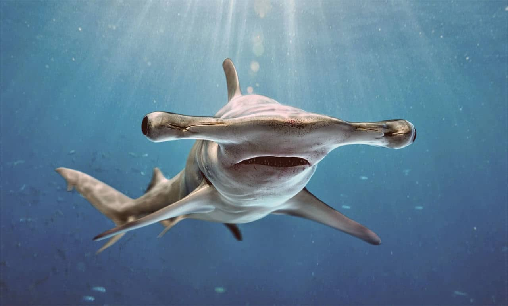

Especies de tubarões
Tubarão-Martelo
Essa espécie apresenta um formato muito diferente de cabeça. Eles têm os olhos completamente separados, e posicioados em lados opostos de sua cabeça com formato de martelo. Não pense que esse tubarão é prejudicado por essa condição. Seus olhos dispostos dessa forma o ajuda a enxergar
Tubarão-Branco

Por que não terminar pela espécie que mais atormentou minha infância? Me recordo de ter lido uma revista quando criança, que continha uma foto bem proeminente de um Tubarão Branco. Eu encarava a imagem por horas não conseguia determinar se a foto me trazia medo ou fascínio. Só sei que até hoje tenho uma memória vívida dessa imagem.